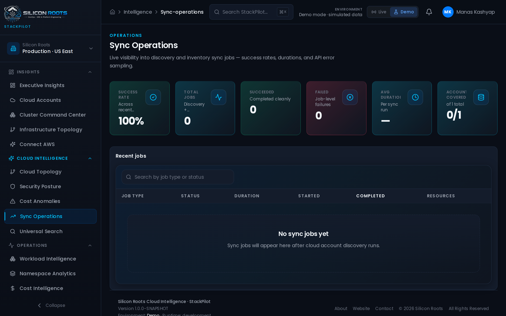
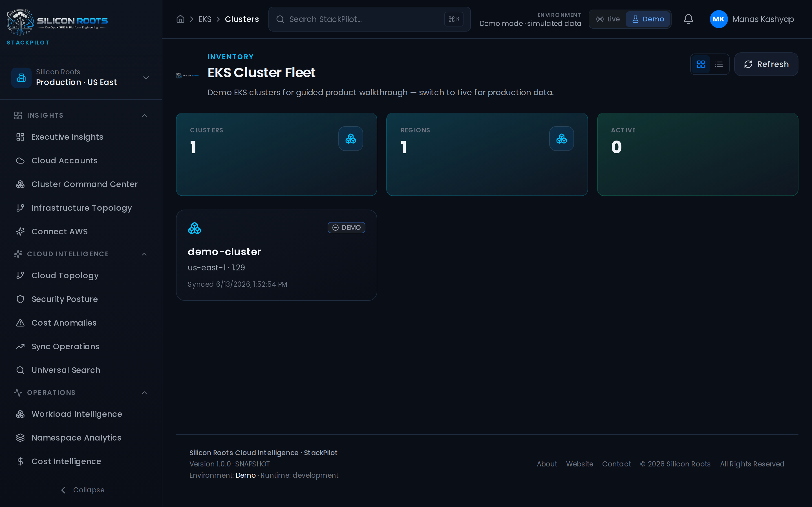
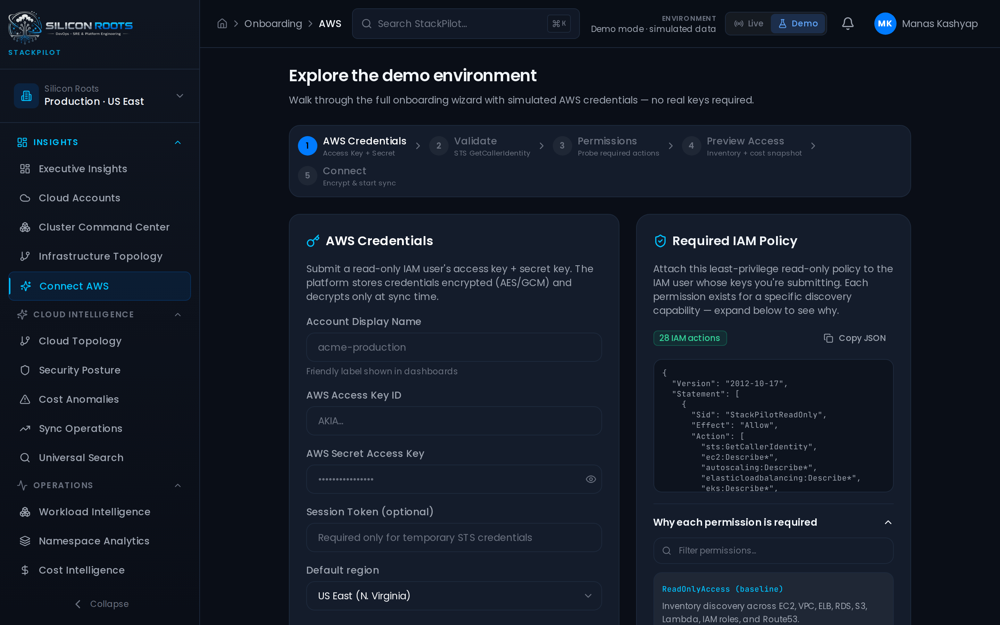

Silicon Roots builds intelligent software that helps engineering teams discover, understand, govern, and optimize cloud infrastructure at scale.
Aggregated real-time observability, node distributions, cost trends, and active workloads.
Click to expand any screenshot of the StackPilot dashboard and inspect its user interface.



Deep capability platform engineered to replace manual inventory operations with unified platform discovery.
Enterprise-wide cloud configuration tracking, historical drift detection, and real-time state analysis.
Automated, continuous indexing processes locate and catalog all target resources across multi-cloud provider accounts.
Consolidate multiple cloud credentials, directories, and regions into a single, unified inventory plane.
Query resources, configure search tags, and audit operational metadata using structured intelligence layers.
Automated dependency mapping tracing logical links from VPC gateways down to individual cluster subnets.
Sub-second querying aggregating active systems, resources, and configurations across your entire fleet.
Cost allocation intelligence mapping infrastructure overhead and raw usage bills down to application namespaces.
Continuous compliance monitoring scanning settings and resource configurations against CIS and custom policies.
Granular access rules and team scoping permissions conforming strictly to least-privilege enterprise requirements.
Immutable activity ledger tracking administrator actions, API interactions, and synchronization histories.
Model complex company structures, coordinate separate team scopes, and govern multiple staging accounts.
Track Kubernetes runtime allocations, deployment workloads, namespaces, and node statuses out-of-the-box.
Silicon Roots was founded on a simple premise: engineering teams should spend their cycles building software, not hunting for metadata across fragmented infrastructure panels.
We believe in programmatic clarity. StackPilot is built to compile complex multi-cloud configurations and Kubernetes clusters into a single, unified inventory database of truth. No agent overhead, no vanity dashboards—just direct API intelligence so engineers can govern their platforms with absolute confidence.
How we are building the unified cloud intelligence plane.
Automate active resource indexing, credential syncing, and universal search across multi-cloud accounts and Kubernetes fleets.
Generate topological relationship mappings to auto-detect resource linkages, isolate network zones, and identify orphan resources.
Establish OPA compliance checks, track configurations against security benchmarks, and map usage costs down to team scopes.
Expose CLI tools and a developer SDK, enabling custom reporting integrations, webhooks, and third-party platform plugins.
StackPilot is built on high-performance, proven open-source technologies to guarantee cluster reliability and secure syncing.
Track our active features and upcoming releases as we build the cloud intelligence plane.
AWS account sync, EKS node monitors, universal query search, and topology maps are live in StackPilot.
Adding Azure and GCP adapters, OPA policy evaluation rules, cost anomaly warning alerts, and deployment drift mapping.
Implementing enterprise OIDC/SAML integrations, a public REST API and CLI tool, and a developer plugin library.
Connect your multi-cloud environments and catalog your entire active infrastructure inventory in under 15 minutes.